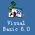
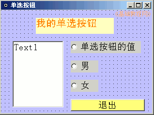
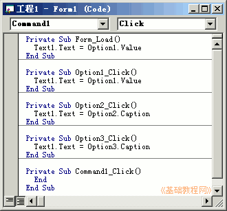
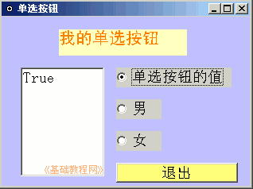

VB程序设计基础
作者：TeliuTe 来源：基础教程网
单选按钮是一个圆按钮，一组里只能选一个，下面我们来看一个练习；
1、启动VB
1）双击桌面上的图标，或者点开始菜单，运行VB；

2）在出来的新建窗口中，点“打开”按钮，新建一个标准EXE工程，然后进入主窗口，以 Option 为文件名保存文件到自己的文件夹；
3）在属性窗口中设置背景色，把标题改为“单选按钮”，设定Icon图标选项；
2、使用单选按钮
1）在窗体中添加一个标签、一个文本框、三个单选按钮、一个命令按钮，排列整齐；
修改标题：标签改成“我的单选按钮”，单选按钮分别改成“单选按钮的值、男、女”、按钮改成“退出”；

2）保存一下，运行程序看看效果，试着点击各个按钮；
3、输入代码
1）进入代码窗口，在左边列表选择 Form1，这是窗体对象，右边自动是加载事件，输入代码；
Text1.Text = Option1.Value
2）接着分别输入三个单选按钮的事件代码，文本框是用来显示的：
Private Sub Option1_Click()
Text1.Text = Option1.Value
End Sub
Private Sub Option2_Click()
Text1.Text = Option2.Caption
End Sub
Private Sub Option3_Click()
Text1.Text = Option3.Caption
End Sub

3）再输入退出按钮的代码，保存一下文件，运行程序看看效果；
单选按钮未选中时，值是False，选中后是True，是一个布尔值；

单选按钮范例(在弹出的对话框中点“运行、运行”)
本节学习了单选按钮的使用方法，如果你成功地完成了练习，请继续学习下一课内容；
本教程由86团学校TeliuTe制作|著作权所有
基础教程网：http://teliute.org/
美丽的校园……
转载和引用本站内容，请保留作者和本站链接。